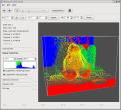
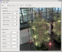

CVL is a library for image and data processing using graphics processing units (GPUs).
It is suitable as a base for GPGPU applications. CVL is based on OpenGL 2.1 and requires the GLEW library. It currently works on GNU/Linux and Windows systems.
Currently, CVL is bundled with cvtool, a command line tool that aims to make all of CVL's functionality available as filters. It integrates well with other tools like netpbm and pfstools.
|  |
CVLView is a viewer for arbitrary data stored in PFS files. |
|  |
CVLTonemap is an interactive tone mapping tool for high dynamic range images. |
This is free software; you can redistribute it and/or modify it under the terms of the GNU General Public License as published by the Free Software Foundation; either version 2 of the License, or (at your option) any later version.